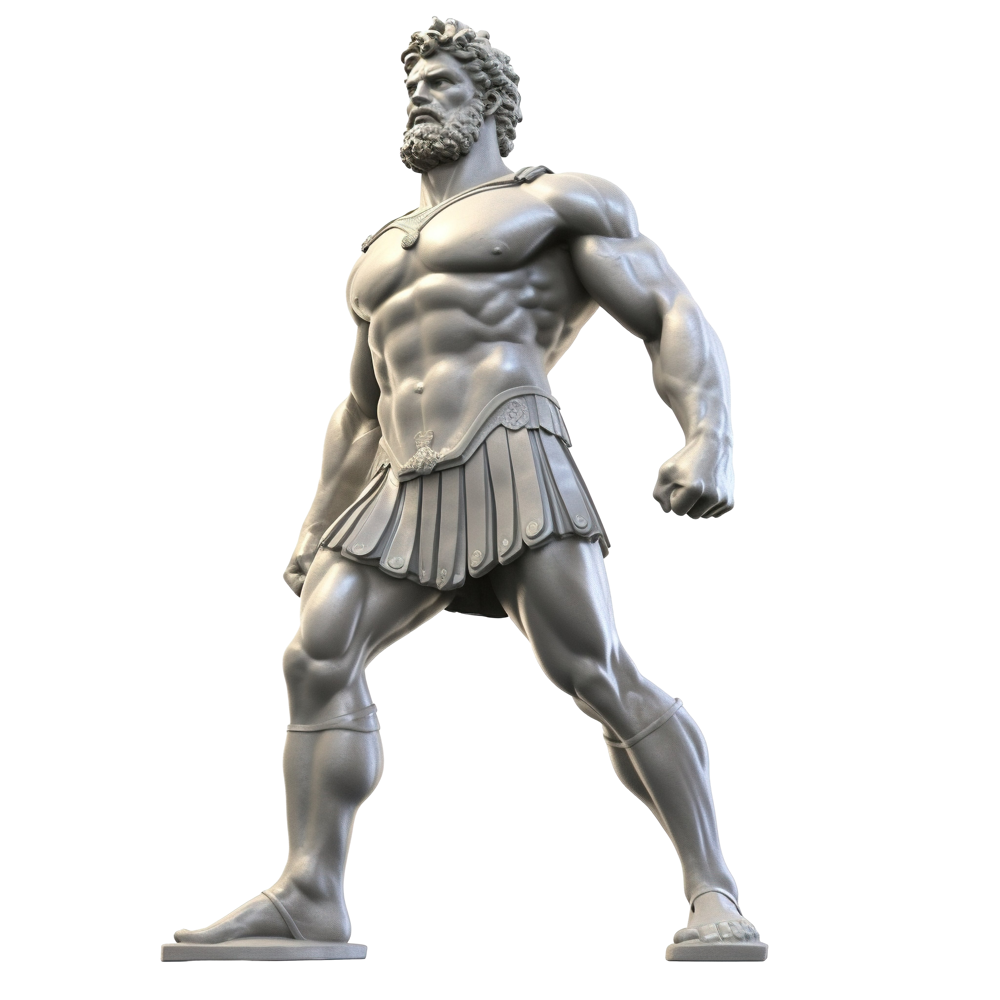

Hercules es considerado como uno de los personajes mas conocidos
de la mitologia griega por todas
las hazañas contadas en su historia.
En esta sitio web, vamos a repasar los distintos trabajos que le han sido
encargados
por Euristeo, 12 misiones que lo pondrán a prueba para remediarse de su locura,
misma con la que
acabó con la vida de su esposa Mégara y de sus hijos.
